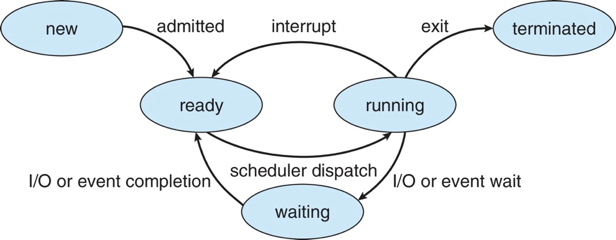

进程、线程与 CPU 调度
课程概述
本系列笔记总结了操作系统中关于进程、线程和CPU调度的核心概念。内容涵盖：
- 进程管理 (Chapter 4): 进程概念、状态、控制块、创建与终止、进程间通信 (IPC) 机制如共享内存、消息传递、管道等。
- 线程管理 (Chapter 5): 线程概念、与进程的区别、用户级与内核级线程、多线程模型、线程库 (Pthreads, Windows, Java)、多线程编程问题与解决方案。
- CPU调度 (Chapter 6): 调度基本概念、调度准则、各种调度算法 (FCFS, SJF, RR, 优先级, 多级队列)、多处理器调度、实时调度及主流操作系统的调度策略。
第四讲 — 进程 (Processes)
学习目标
- 理解进程的组成部分及其在操作系统中的表示和调度。
- 掌握进程的创建与终止，包括相关系统调用的使用。
- 对比共享内存和消息传递这两种进程间通信方式。
- 了解管道和POSIX共享内存进行进程间通信的编程。
- 熟悉使用套接字和远程过程调用 (RPC) 的客户机-服务器通信。
1. 进程概念 (Process Concept)
1.1 程序 vs. 进程
- 程序 (Program): 存储在磁盘上的被动实体，是一个可执行文件，包含一系列指令。
- 进程 (Process): 正在执行的程序实例，是一个活动实体。当可执行文件加载到内存中时，程序就成为进程。
- 一个程序可以对应多个进程（例如，多个用户同时运行同一个程序）。
1.2 进程的组成
一个进程通常包含多个部分：
- 文本段 (Text Segment): 程序代码。
- 程序计数器 (Program Counter): 指向下一条要执行的指令。
- 处理器寄存器 (Processor Registers): 当前活动的寄存器值。
- 堆栈 (Stack): 包含临时数据，如函数参数、返回地址、局部变量。
- 数据段 (Data Segment): 包含全局变量。
- 堆 (Heap): 包含运行时动态分配的内存。
1.3 进程在内存中的布局 (Linux 32-bit Example)
0xFFFFFFFF +-------------------+
| Kernel | Kernel Space (1G)
0xC0000000 +-------------------+
| Stack | (向低地址增长) 函数信息, 局部动态变量, 局部常量
| ... |
| mmap | Memory mapping (文件映射, 共享库等)
| ... |
| Heap | (向高地址增长) 动态分配的变量
| .bss | 未初始化的全局/静态变量
| .data | 已初始化的全局/静态变量
0x08048000 | .text | 程序代码, 全局常量, 字符串字面量
+-------------------+
0x00000000 | Reserved by OS | User Space (3G)
.text: 代码段.data: 初始化数据段.bss: 未初始化数据段 (Block Started by Symbol)heap: 动态内存分配区域mmap: 内存映射区 (Memory Mapped Region)stack: 栈区Kernel space: 内核空间，用户进程不可直接访问。
1.4 进程状态 (Process State)
进程在执行时会改变状态：
- 新建 (New): 进程正在被创建。
- 运行 (Running): 指令正在被执行。
- 等待 (Waiting/Blocked): 进程正在等待某个事件发生（如I/O完成或收到信号）。
- 就绪 (Ready): 进程等待被分配给处理器执行。
- 终止 (Terminated): 进程已完成执行。
5状态进程模型

- 新建 -> 就绪
- 就绪 -> 运行 (调度器分派)
- 运行 -> 等待 (I/O或事件等待)
- 运行 -> 就绪 (中断或时间片用完)
- 等待 -> 就绪 (I/O或事件完成)
- 运行 -> 终止
1.5 挂起进程 (Suspended Process)
- 交换 (Swap): 将内存中的一个进程的一部分或全部移到磁盘上，以释放内存。
- 当内存中没有就绪进程时，OS可能将阻塞进程交换到磁盘，进入挂起队列。
- 特征: 不能立即执行；可能等待事件，也可能没等；除非显式命令，否则无法从挂起状态转移。
- 原因: 系统需要、父进程请求、用户请求、定时等。
1.6 进程控制块 (Process Control Block - PCB)
PCB (也称任务控制块 Task Control Block, TCB) 是操作系统中用于管理进程的数据结构，包含了一个特定进程的所有信息。
- 进程状态: 运行、等待等。
- 程序计数器: 下一条要执行指令的地址。
- CPU寄存器: 各种寄存器的内容。
- CPU调度信息: 进程优先级、调度队列指针等。
- 内存管理信息: 基址寄存器、页表等。
- 记账信息: CPU使用时间、时间限制等。
- I/O状态信息: 分配给进程的I/O设备、打开文件列表等。
PCB的重要性与保护
PCB是操作系统最重要的的数据结构之一。它的损坏可能导致系统无法管理对应进程。对PCB的访问需要保护机制。
- Linux中的PCB:
task_struct(位于include/linux/sched.h)pid_t pid;(进程标识符)struct task_struct *parent;(父进程)struct list_head children;(子进程列表)struct files_struct *files;(打开文件列表)struct mm_struct *mm;(进程地址空间)
2. 进程调度 (Process Scheduling)
- 调度器 (Scheduler): 从就绪进程中选择一个在CPU上执行。
- 目标: 最大化CPU利用率，快速切换进程。
- 调度队列 (Scheduling Queues):
- 就绪队列 (Ready Queue): 内存中所有就绪等待执行的进程。
- 等待队列 (Wait Queue): 等待某事件（如I/O）的进程集合。
- 上下文切换 (Context Switch): 当CPU从一个进程切换到另一个进程时，系统需要保存当前进程的上下文（PCB中的信息）并加载下一个进程的上下文。这是一个纯开销操作。
- 触发: 中断、陷阱 (系统调用或错误)。
3. 进程操作 (Operations on Processes)
3.1 进程创建 (Process Creation)
- 父进程创建子进程，形成进程树。
- 资源共享选项:
- 父子进程共享所有资源。
- 子进程共享父进程资源的一个子集。
- 父子进程不共享资源。
- 执行选项:
- 父子进程并发执行。
- 父进程等待子进程终止。
-
地址空间选项:
- 子进程是父进程的副本（共享代码，数据写时复制）。
- 子进程加载一个新程序。
-
UNIX/Linux中的进程创建:
fork(): 创建一个新进程，子进程是父进程的副本。fork()对父进程返回子进程的PID，对子进程返回0。失败返回-1。
exec()系列函数: (execlp,execvp等) 在一个进程的上下文中加载并运行一个新的程序。它会替换当前进程的内存空间（代码、数据、堆栈等）。wait(): 父进程调用以等待子进程终止，并获取子进程的退出状态。vfork(): 创建子进程并阻塞父进程，直到子进程调用exec()或exit()。子进程在父进程的地址空间中运行（不推荐使用，易出错）。
fork() + exec() 模式
pid_t pid = fork();
if (pid < 0) { /* error */ }
else if (pid == 0) { /* child process */
execlp("/bin/ls", "ls", NULL);
} else { /* parent process */
wait(NULL);
printf("Child Complete\n");
}
3.2 进程终止 (Process Termination)
- 进程执行完最后一条语句后，调用
exit()系统调用请求操作系统删除它。exit()会释放进程资源，并将退出状态返回给父进程（如果父进程调用了wait()）。
- 父进程可以通过
abort()(或发送信号) 终止子进程。原因：- 子进程超出资源分配。
- 分配给子进程的任务不再需要。
- 父进程正在退出，且OS不允许子进程继续 (级联终止)。
- 僵尸进程 (Zombie Process): 子进程已终止，但其父进程尚未调用
wait()来获取其状态。PCB仍然保留。 - 孤儿进程 (Orphan Process): 父进程在子进程之前终止。孤儿进程通常会被
init进程 (PID 1) 收养，init进程会定期调用wait()清理它们。
4. 进程间通信 (Inter-Process Communication - IPC)
协作进程需要IPC机制来交换数据和信息。 两种基本模型：
- 共享内存 (Shared Memory):
- 进程间共享一块内存区域。
- 通信由用户进程控制，OS只负责建立共享内存区域。
- 优点：速度快（数据不需要在内核和用户空间之间复制）。
- 缺点：需要同步机制来控制对共享内存的访问（如信号量、互斥锁）。
- 消息传递 (Message Passing):
- 进程通过交换消息进行通信，无需共享变量。
- OS提供
send(message)和receive(message)操作。 - 优点：易于实现，无需担心同步问题（由OS处理）。
- 缺点：速度通常比共享内存慢（涉及系统调用和数据复制）。
4.1 共享内存系统
-
生产者-消费者问题 (Producer-Consumer Problem):
- 生产者进程产生数据，消费者进程消费数据。
- 需要一个共享缓冲区。
- 无界缓冲区 (Unbounded-buffer): 缓冲区大小无限制。
- 有界缓冲区 (Bounded-buffer): 缓冲区大小固定。
- 使用循环数组和
in,out指针。 in: 指向下一个空位。out: 指向第一个满位。- 缓冲区空:
in == out - 缓冲区满:
(in + 1) % BUFFER_SIZE == out
- 使用循环数组和
-
Linux System V 共享内存:
key_t ftok(const char *pathname, int proj_id): 生成一个IPC key。int shmget(key_t key, size_t size, int shmflg): 创建或获取一个共享内存段，返回共享内存标识符shmid。shmflg:IPC_CREAT(创建),IPC_EXCL(与IPC_CREAT合用，确保创建新的), 权限位。
void *shmat(int shmid, const void *shmaddr, int shmflg): 将共享内存段附加到当前进程的地址空间，返回指向共享内存的指针。shmaddr = 0: 由内核决定附加地址。
int shmdt(const void *shmaddr): 分离共享内存段。int shmctl(int shmid, int cmd, struct shmid_ds *buf): 控制共享内存。cmd = IPC_RMID: 删除共享内存段。
-
POSIX 共享内存:
- 使用内存映射文件 (memory-mapped files)。
int shm_open(const char *name, int oflag, mode_t mode): 创建或打开一个POSIX共享内存对象，返回文件描述符。name通常是/somename形式。int ftruncate(int fd, off_t length): 设置共享内存对象的大小。void *mmap(void *addr, size_t length, int prot, int flags, int fd, off_t offset): 将共享内存对象映射到进程的地址空间。int shm_unlink(const char *name): 删除POSIX共享内存对象。- 编译时链接
rt库:gcc -lrt your_program.c
4.2 消息传递系统
-
通信链路 (Communication Link):
- 直接通信 (Direct Communication): 进程必须显式命名对方。
send(P, message)receive(Q, message)- 链路自动建立，通常一对一，双向。
- 间接通信 (Indirect Communication): 通过邮箱 (mailboxes) 或端口 (ports) 发送和接收消息。
- 每个邮箱有唯一ID。进程共享邮箱才能通信。
send(A, message)(发送到邮箱A)receive(A, message)(从邮箱A接收)- 允许多对多通信。
- 直接通信 (Direct Communication): 进程必须显式命名对方。
-
同步 (Synchronization):
- 阻塞发送 (Blocking send): 发送方等待，直到消息被接收方或邮箱接收。
- 阻塞接收 (Blocking receive): 接收方等待，直到有消息可用。
- 非阻塞发送 (Non-blocking send): 发送方发送消息并继续执行。
- 非阻塞接收 (Non-blocking receive): 接收方接收有效消息或空消息（或状态）。
- 会合 (Rendezvous): 发送和接收都阻塞。
-
缓冲 (Buffering):
- 零容量 (Zero capacity): 发送方必须等待接收方 (无缓冲，会合)。
- 有限容量 (Bounded capacity): 队列满时发送方必须等待。
- 无限容量 (Unbounded capacity): 发送方从不等待。
-
Linux System V 消息队列:
key_t ftok(...)int msgget(key_t key, int msgflg): 创建或获取消息队列，返回msqid。int msgsnd(int msqid, const void *msgp, size_t msgsz, int msgflg): 发送消息。msgp: 指向struct msgbuf { long mtype; char mtext[...]; }。msgsz:mtext的大小。msgflg:IPC_NOWAIT(非阻塞)。
ssize_t msgrcv(int msqid, void *msgp, size_t msgsz, long msgtyp, int msgflg): 接收消息。msgtyp:=0(队列中第一个消息),>0(第一个类型为msgtyp的消息),<0(类型小于等于|msgtyp|的最小类型消息)。
int msgctl(int msqid, int cmd, struct msqid_ds *buf): 控制消息队列。cmd = IPC_RMID: 删除。
-
POSIX 消息队列:
mqd_t mq_open(const char *name, int oflag, mode_t mode, struct mq_attr *attr): 创建或打开消息队列。name通常是/mqname。int mq_close(mqd_t mqdes): 关闭。int mq_unlink(const char *name): 删除。int mq_send(mqd_t mqdes, const char *msg_ptr, size_t msg_len, unsigned int msg_prio): 发送。ssize_t mq_receive(mqd_t mqdes, char *msg_ptr, size_t msg_len, unsigned int *msg_prio): 接收。- 编译时链接
rt库:gcc -lrt your_program.c
4.3 管道 (Pipes)
- 允许两个进程通信的通道。
- 普通管道 (Ordinary/Unnamed Pipes):
- 单向通信 (一端写，一端读)。
- 通常要求父子关系 (父进程创建管道，然后
fork，子进程继承文件描述符)。 int pipe(int pipefd[2]):pipefd[0]是读端,pipefd[1]是写端。- 在Windows中称为匿名管道。
- 命名管道 (Named Pipes / FIFOs):
- 比普通管道更强大。
- 通信可以是双向的 (但通常一个方向一个FIFO)。
- 不需要父子关系，任何知道FIFO名称的进程都可以使用。
- 在文件系统中有一个路径名。
mkfifo(const char *pathname, mode_t mode): 创建FIFO。- 使用
open(),read(),write(),close()进行操作。
4.4 套接字 (Sockets)
- 通信的端点。
- 通过
(IP地址:端口号)标识。例如192.168.1.100:8080。 - 允许不同机器上的进程通信。
- 类型：
- 面向连接 (TCP - Transmission Control Protocol):可靠的、基于字节流的通信。
- 无连接 (UDP - User Datagram Protocol): 不可靠的、基于数据报的通信。
4.5 远程过程调用 (Remote Procedure Calls - RPC)
- 允许进程调用另一台机器上（或同一机器上另一地址空间中）的过程（函数/方法），就像调用本地过程一样。
- 客户端的 存根 (Stub) 负责打包参数 (编组/marshalling) 并发送给服务器。
- 服务器端的存根负责解包参数 (解组/unmarshalling)，调用实际过程，并将结果返回。
- 接口定义语言 (IDL - Interface Definition Language): 用于定义RPC接口。
- 数据表示: 需要处理不同机器架构的数据格式问题 (如大端/小端)，例如使用外部数据表示 (XDR)。
- 现代例子：gRPC (使用 Protocol Buffers 作为IDL和序列化格式)。
第五讲 — 线程 (Threads)
学习目标
- 理解线程概念，以及进程与线程的区别。
- 了解线程的基本设计与实现。
- 掌握用户级和内核级线程的差异及线程模型。
- 熟悉Pthreads、Windows和Java线程库API。
- 了解隐式线程的概念。
- 讨论多线程编程中遇到的问题。
- 了解Windows、Linux等操作系统中的线程管理功能。
1. 线程概念 (Thread Concept)
- 线程 (Thread): CPU调度的基本单元。是进程内的一个执行路径/控制流。
- 一个进程可以包含多个线程，它们共享进程的资源。
- 线程的组成 (线程私有):
- 线程ID
- 程序计数器 (PC)
- 寄存器集合
- 堆栈 (Stack)
- 线程共享的资源 (属于进程):
- 代码段 (Text Segment)
- 数据段 (Data Segment)
- 堆 (Heap)
- 打开的文件
- 信号
进程 vs. 线程
- 资源所有权: 进程是资源分配的基本单位。线程是CPU调度的基本单位，它共享其所属进程的资源。
- 开销: 创建/撤销线程比创建/撤销进程开销小得多。线程切换比进程上下文切换开销小。
- 并发性: 线程使得在单个进程内实现并发成为可能。
2. 多线程的优点 (Benefits of Multithreading)
- 响应性 (Responsiveness): 即使进程的一部分被阻塞（如等待I/O），其他线程仍可继续执行，提高应用对用户的响应速度。
- 资源共享 (Resource Sharing): 线程默认共享内存和资源，方便数据交换。
- 经济性 (Economy): 创建和切换线程比进程开销小。
- 可伸缩性 (Scalability): 多线程程序可以更好地利用多核处理器架构，实现并行执行。
3. 多核编程 (Multicore Programming)
- 并发 (Concurrency): 系统支持多个任务同时进行（逻辑上）。在单核上通过快速切换实现。
- 并行 (Parallelism): 系统能够同时执行多个任务（物理上）。需要多核。
-
Amdahl定律: 描述了在具有串行和并行组件的程序中，通过增加处理器核心获得的加速比。
\(Speedup \le \frac{1}{S + \frac{1-S}{N}}\)
其中 \(S\) 是程序中串行部分的比例，\(N\) 是处理器核心数。
-
并行类型:
- 数据并行 (Data Parallelism): 将相同数据的子集分配到多个核心上，每个核心执行相同的操作。
- 任务并行 (Task Parallelism): 将不同的任务（线程）分配到多个核心上，每个线程执行不同的操作。
4. 用户线程与内核线程 (User Threads and Kernel Threads)
- 用户线程 (User Threads):
- 由用户级线程库管理，内核对它们无感知。
- 创建和管理快速，不需内核干预。
- 如果一个用户线程阻塞（如进行系统调用），整个进程都会阻塞。
- 不能真正利用多核处理器。
- 内核线程 (Kernel Threads):
- 由操作系统内核直接支持和管理。
- 创建和管理相对较慢，需要内核模式切换。
- 一个内核线程阻塞，不影响同进程的其他内核线程。
- 可以真正利用多核处理器。
线程模型 (Mapping User Threads to Kernel Threads)
- 多对一模型 (Many-to-One):
- 多个用户线程映射到一个内核线程。
- 线程管理在用户空间，高效。
- 缺点：一个线程阻塞导致整个进程阻塞；无法利用多核。
- 例子：早期的Green Threads (Solaris)。
- 一对一模型 (One-to-One):
- 每个用户线程映射到一个内核线程。
- 提供更多并发性，能利用多核。
- 缺点：创建用户线程需要创建相应内核线程，开销较大。
- 例子：Linux, Windows。
- 多对多模型 (Many-to-Many):
- m个用户线程映射到n个内核线程 (\(m \ge n\))。
- 兼具前两者优点：允许开发者创建任意多用户线程，相应内核线程可在多处理器上并行执行；一个线程阻塞不会阻塞整个进程。
- 实现复杂。
- 有时也包含二级模型 (Two-level Model)，允许用户线程绑定到特定内核线程。
5. 线程库 (Thread Libraries)
提供创建和管理线程的API。
- Pthreads (POSIX Threads):
- POSIX标准 (IEEE 1003.1c) 的API规范，非具体实现。
- 可在用户级或内核级实现。
- 常见于UNIX类系统 (Linux, macOS)。
- 主要函数：
pthread_create(): 创建线程。pthread_join(): 等待一个线程终止。pthread_exit(): 线程自我终止。pthread_attr_init(),pthread_attr_destroy(): 线程属性。
- Windows Threads:
- 内核级线程库，一对一模型。
- 主要函数：
CreateThread(): 创建线程。WaitForSingleObject()/WaitForMultipleObjects(): 等待线程。ExitThread(): 线程终止。
- Java Threads:
- Java线程API通常在JVM层面实现，JVM再利用底层OS的线程库 (Pthreads或Windows Threads)。
- 创建方式：
- 继承
Thread类并重写run()方法。 - 实现
Runnable接口 (更常用)，并将其对象传递给Thread构造函数。
- 继承
Thread.start(): 启动线程 (调用run()方法)。Thread.join(): 等待线程结束。- Java Executor框架 (e.g.,
ThreadPoolExecutor) 提供了更高级的线程管理。
6. 隐式线程 (Implicit Threading)
由编译器和运行时库而非程序员来创建和管理线程，以简化并行编程。
- 线程池 (Thread Pools):
- 预先创建一组线程，等待分配任务。
- 优点：减少线程创建销毁开销；限制并发线程数。
- Fork-Join:
- 父线程创建一个或多个子任务（fork），然后等待它们完成（join）。
- 适用于可递归分解的任务。
- OpenMP (Open Multi-Processing):
- 一套指导编译器在共享内存环境中进行并行编程的API和指令。
- 通过
#pragma omp parallel等指令标识并行区域。
- GCD (Grand Central Dispatch):
- Apple为macOS和iOS提供的技术。
- 将任务（blocks）提交到调度队列（串行或并发），由GCD管理线程池执行。
- Intel TBB (Threading Building Blocks):
- C++模板库，用于编写并行程序。
7. 多线程问题 (Threading Issues)
fork()和exec()系统调用的语义:- 当多线程进程中的一个线程调用
fork()时：- 是只复制调用
fork()的线程，还是复制所有线程？(UNIX通常只复制调用线程)
- 是只复制调用
exec()通常会替换整个进程（包括所有线程）。
- 当多线程进程中的一个线程调用
- 信号处理 (Signal Handling):
- 当一个信号发送给多线程进程时，应由哪个线程处理？
- 传递给信号适用的线程。
- 传递给进程中的每个线程。
- 传递给进程中的某些特定线程。
- 指定一个特定线程接收进程的所有信号。
- 当一个信号发送给多线程进程时，应由哪个线程处理？
- 线程取消 (Thread Cancellation):
- 终止目标线程。
- 异步取消 (Asynchronous cancellation): 立即终止目标线程。可能导致资源未释放。
- 延迟取消 (Deferred cancellation): 目标线程周期性检查是否应被取消。允许线程在安全点退出，并执行清理操作。 (Pthreads默认)
pthread_cancel(),pthread_setcancelstate(),pthread_setcanceltype(),pthread_testcancel().
- 线程本地存储 (Thread-Local Storage - TLS):
- 允许每个线程拥有自己的数据副本。当使用线程池等无法控制线程创建过程时有用。
- 调度程序激活 (Scheduler Activations):
- 用于多对多或二级模型，内核通过 "upcall" 机制通知用户级线程库内核线程数量的变化，以便库调整用户线程到内核线程的映射。涉及轻量级进程 (LWP)。
8. 操作系统中的线程示例
- Windows Threads:
- 一对一模型。
- 主要数据结构：
ETHREAD(Executive Thread Block): 内核空间，指向KTHREAD和所属进程。KTHREAD(Kernel Thread Block): 内核空间，调度和同步信息，内核栈，指向TEB。TEB(Thread Environment Block): 用户空间，线程ID，用户模式栈，TLS。
- Linux Threads:
- Linux不严格区分进程和线程，都称为任务 (task)。
- 线程创建通过
clone()系统调用，允许子任务共享父任务的地址空间。 task_struct数据结构用于表示任务。
第六讲 — CPU调度 (CPU Scheduling)
学习目标
- 理解长程、中程、短程调度的概念和区别。
- 描述各种CPU调度算法。
- 根据调度标准评估CPU调度算法。
- 解释与多处理器和多核调度相关的问题。
- 描述各种实时调度算法。
- 了解Windows、Linux和Solaris操作系统中使用的调度算法。
- 应用建模和仿真评估CPU调度算法。
1. 基本概念 (Basic Concepts)
- 多道程序设计 (Multiprogramming): 通过在内存中同时保留多个进程，使CPU总有任务执行，从而提高CPU利用率。
- CPU-I/O执行周期 (CPU–I/O Burst Cycle): 进程执行由CPU执行和I/O等待交替构成。
- 调度层次:
- 长程调度 (Long-term scheduler / Job scheduler): 决定哪些程序从作业池调入内存成为进程，控制系统的并发度。执行频率低。
- 中程调度 (Medium-term scheduler): 涉及进程的换入换出 (swapping)，管理系统并发度。
- 短程调度 (Short-term scheduler / CPU scheduler): 从就绪队列中选择一个进程分配CPU。执行频率高。
- 调度程序 (Dispatcher): 将CPU控制权交给短程调度程序选中的进程。涉及：
- 上下文切换。
- 切换到用户模式。
- 跳转到用户程序中适当位置以重新启动程序。
- 分派延迟 (Dispatch latency): 调度程序停止一个进程并启动另一个进程运行所需的时间。
触发调度的事件
- 进程从运行态 -> 等待态 (如I/O请求)。
- 进程从运行态 -> 就绪态 (如中断、时间片用完)。
- 进程从等待态 -> 就绪态 (如I/O完成)。
-
进程终止。
-
非抢占式调度 (Non-preemptive): 一旦CPU分配给进程，进程将一直持有CPU直到它自愿释放（终止或进入等待态）。情况1和4。
- 抢占式调度 (Preemptive): 当前运行的进程可能被更高优先级的进程或中断打断，并被剥夺CPU。情况2和3。
2. 调度准则 (Scheduling Criteria)
用于比较CPU调度算法的性能：
- CPU利用率 (CPU utilization): 使CPU尽可能繁忙。
- 吞吐量 (Throughput): 单位时间内完成的进程数量。
- 周转时间 (Turnaround time): 进程从提交到完成的总时间 (等待进入内存时间 + 就绪队列等待时间 + CPU执行时间 + I/O时间)。
- 等待时间 (Waiting time): 进程在就绪队列中等待CPU的总时间。
- 响应时间 (Response time): 从提交请求到产生第一个响应的时间 (对于交互式系统)。
优化目标:
- 最大化 CPU利用率
- 最大化 吞吐量
- 最小化 周转时间
- 最小化 等待时间
- 最小化 响应时间
3. 调度算法 (Scheduling Algorithms)
3.1 先到先服务 (First-Come, First-Served - FCFS)
- 按进程到达就绪队列的顺序分配CPU。
- 实现简单 (FIFO队列)。
- 非抢占式。
- 缺点: 平均等待时间可能很长，受进程到达顺序影响。可能出现 护航效应 (convoy effect)：短进程等待长进程释放CPU。
3.2 最短作业优先 (Shortest-Job-First - SJF)
- 选择具有最短下一个CPU执行时间（CPU burst）的进程。
- 可证明在平均等待时间上是最优的。
- 两种形式:
- 非抢占式SJF: 当前进程运行完毕后，选择就绪队列中下一个CPU执行时间最短的进程。
- 抢占式SJF (Shortest-Remaining-Time-First - SRTF): 如果新到达就绪队列的进程的下一个CPU执行时间比当前运行进程的剩余执行时间还短，则抢占当前进程。
- 缺点: 难以准确预测下一个CPU执行时间的长度。
- 常用 指数平均法 (Exponential Averaging) 预测： \(\tau_{n+1} = \alpha \cdot t_n + (1-\alpha) \cdot \tau_n\) 其中 \(t_n\) 是第n个CPU执行的实际长度，\(\tau_n\) 是第n个CPU执行的预测长度，\(\alpha\) (\(0 \le \alpha \le 1\)) 控制历史权重。
3.3 优先级调度 (Priority Scheduling)
- 每个进程关联一个优先级，CPU分配给具有最高优先级的进程。
- 可以是抢占式或非抢占式。
- SJF可以看作一种优先级调度，优先级是预测的下一个CPU执行时间的倒数。
- 问题: 饥饿 (Starvation) —— 低优先级进程可能永远无法执行。
- 解决方案: 老化 (Aging) —— 随着时间的推移逐渐增加等待进程的优先级。
3.4 轮转调度 (Round Robin - RR)
- 专为分时系统设计，抢占式。
- 每个进程分配一个固定的时间单位，称为 时间片 (time quantum / time slice)，通常10-100ms。
- 进程用完时间片后，被抢占并放回就绪队列尾部。
- 性能:
- 时间片 \(q\) 很大 \(\Rightarrow\) 趋向于FCFS。
- 时间片 \(q\) 很小 \(\Rightarrow\) 上下文切换频繁，开销大。\(q\) 必须远大于上下文切换时间。
- 平均周转时间通常优于FCFS，但不如SJF。响应时间较好。
3.5 多级队列调度 (Multilevel Queue Scheduling)
- 将就绪队列划分为多个独立的队列，例如：
- 前台队列 (交互式进程) - 可能使用RR算法。
- 后台队列 (批处理进程) - 可能使用FCFS算法。
- 队列之间必须有调度：
- 固定优先级抢占: 前台队列优先于后台队列。
- 时间片划分: 每个队列获得一定的CPU时间比例。
3.6 多级反馈队列调度 (Multilevel Feedback Queue Scheduling)
- 允许进程在不同队列之间移动。
- 思想：根据进程的CPU执行特性来区分它们。
- CPU密集型进程会降到较低优先级队列。
- I/O密集型和交互式进程会保持在较高优先级队列。
- 定义参数:
- 队列数量。
- 每个队列的调度算法。
- 进程升级到更高优先级队列的方法。
- 进程降级到更低优先级队列的方法。
- 新进程进入哪个队列的方法。
- 是最通用但也最复杂的调度算法，可以通过配置适应特定系统。可以实现老化。
4. 线程调度 (Thread Scheduling)
- 如果操作系统支持线程，调度的是内核级线程。
- 用户级线程由线程库在映射到的LWP (轻量级进程) 上调度。
- 进程竞争范围 (Process Contention Scope - PCS): 调度竞争在同一进程内的线程之间。
- 内核级线程由操作系统调度。
- 系统竞争范围 (System Contention Scope - SCS): 调度竞争在系统中所有线程之间。
- Pthreads API允许指定PCS或SCS：
PTHREAD_SCOPE_PROCESS(PCS)PTHREAD_SCOPE_SYSTEM(SCS) (Linux, macOS只支持这个)
5. 多处理器调度 (Multiprocessor Scheduling)
- 涉及在多个CPU上分配工作。
- 非对称多处理 (Asymmetric Multiprocessing): 一个主处理器处理所有调度决策、I/O等，其他处理器执行用户代码。
- 对称多处理 (Symmetric Multiprocessing - SMP): 每个处理器都是自调度的。
- 所有进程可能在公共就绪队列中。
- 每个处理器可能有自己的私有就绪队列。
- 处理器亲和性 (Processor Affinity): 进程倾向于在同一个处理器上运行，以利用缓存。
- 软亲和性 (Soft affinity): OS试图保持进程在同一处理器，但不保证。
- 硬亲和性 (Hard affinity): 进程可以指定它只能在某个处理器子集上运行。
- 负载均衡 (Load Balancing): 保持所有处理器的工作负载均匀。
- 推迁移 (Push migration): 周期性任务检查负载，并将任务从过载处理器推到空闲处理器。
- 拉迁移 (Pull migration): 空闲处理器从繁忙处理器拉取等待任务。
- 多核处理器 (Multicore Processors): 同一物理芯片上的多个处理器核心。
- 芯片多线程 (Chip Multithreading - CMT) / 超线程 (Hyper-threading): 每个核心支持多个硬件线程。OS看到更多逻辑处理器。
- 细粒度多线程: 在指令周期级切换线程。
- 粗粒度多线程: 仅在长延迟事件（如内存停顿）时切换线程。
6. 实时CPU调度 (Real-Time CPU Scheduling)
- 系统的正确性不仅取决于计算的逻辑结果，还取决于结果产生的时间。
- 软实时系统 (Soft real-time systems): 关键实时任务获得优先权，但不保证按时完成。
- 硬实时系统 (Hard real-time systems): 任务必须在截止期限 (deadline) 前完成。
- 延迟最小化:
- 事件延迟 (Event latency): 从事件发生到服务该事件的时间。
- 中断延迟 (Interrupt latency): 从CPU收到中断到中断处理例程开始的时间。
- 分派延迟 (Dispatch latency): 停止一个进程并启动另一个进程所需的时间。
- 基于优先级的调度是基础。抢占式。
- 周期性进程特征：处理时间 \(t\)，截止日期 \(d\)，周期 \(p\)。 (\(0 \le t \le d \le p\))。
- 准入控制 (Admission control): 如果不能保证任务按时完成，则拒绝该任务。
实时调度算法
- 速率单调调度 (Rate-Monotonic Scheduling - RMS):
- 静态优先级策略。优先级根据周期的倒数分配（周期越短，优先级越高）。
- 抢占式。
- 最优的静态优先级算法。
- CPU利用率有上限：\(U = n(2^{1/n} - 1)\)，其中 \(n\) 是进程数。对于 \(n \to \infty\), \(U \approx \ln 2 \approx 0.69\)。
- 最早截止期限优先调度 (Earliest-Deadline-First - EDF):
- 动态优先级策略。截止期限越早，优先级越高。
- 抢占式。
- 理论上最优，可以达到100%的CPU利用率（如果总利用率 \(\le 1\)）。
- 比例分享调度 (Proportional Share Scheduling):
- 在所有进程之间分配 \(T\) 份处理器时间份额。一个应用获得 \(N\) 份，则它得到 \(N/T\) 的处理器时间。
- 优先级反转 (Priority Inversion): 低优先级进程持有高优先级进程所需资源，导致高优先级进程等待低优先级进程。
- 优先级继承协议 (Priority Inheritance Protocol): 低优先级进程临时继承等待它的高优先级进程的优先级。
7. 操作系统示例 (Operating System Examples)
7.1 Linux调度
- 早期版本使用类似UNIX的调度算法。
- 内核2.5后引入 O(1) 调度器。
- 内核2.6.23后引入 完全公平调度程序 (Completely Fair Scheduler - CFS) 作为默认调度器。
- 针对普通（非实时）进程。
- 不直接分配时间片，而是分配CPU时间的比例。
- 每个任务维护一个 虚拟运行时间 (vruntime)。调度器选择
vruntime最小的任务运行。 vruntime根据任务的nice值（优先级）进行调整。nice值越低（优先级越高），vruntime增长越慢。- 目标延迟 (Target latency): 保证每个任务在一段时间内至少运行一次。
- 实时任务使用SCHED_FIFO (FCFS) 和 SCHED_RR (轮转) 调度策略，优先级高于普通任务。
7.2 Windows调度
- 基于优先级的抢占式调度。
- 32级优先级方案。
- 可变优先级类 (1-15)。
- 实时优先级类 (16-31)。
- 优先级0用于内存管理线程。
- 调度器 (dispatcher) 选择最高优先级的可运行线程。
- 线程用完时间片后，优先级可能会降低（但不会低于基准优先级）。
- 等待I/O的线程完成后，其优先级可能会临时提升 (priority boost)。
- 用户模式调度 (User-Mode Scheduling - UMS) 允许应用程序创建和管理自己的线程，独立于内核。
7.3 Solaris调度
- 基于优先级的调度。
- 多个调度类：
- 分时 (TS - Timesharing): 默认，多级反馈队列。
- 交互式 (IA - Interactive): 类似TS，但对窗口活动进程有优先级提升。
- 实时 (RT - Real-Time): 固定优先级，抢占式。
- 系统 (SYS): 内核线程。
- 公平份额 (FSS - Fair Share): 按CPU份额分配。
- 固定优先级 (FP - Fixed Priority): 类似RT。
- 调度器将类特定优先级转换为全局优先级，选择全局优先级最高的线程运行。
8. 算法评估 (Algorithm Evaluation)
- 确定性建模 (Deterministic Modeling):
- 给定特定的预定工作负载，计算每个算法的性能。
- 简单快速，但结果只对该特定负载有效。
- 排队模型 (Queueing Models):
- 使用概率分布描述进程到达和CPU/I/O执行。
- 计算平均吞吐量、利用率、等待时间等。
- Little's Law: \(L = \lambda \times W\)
- \(L\): 队列中的平均进程数。
- \(\lambda\): 平均到达率。
- \(W\): 队列中的平均等待时间。
- 仿真 (Simulations):
- 编写程序模拟操作系统行为。
- 使用随机数生成器或跟踪磁带 (trace tapes) 生成事件。
- 更灵活和准确，但设计和实现复杂。
- 实现 (Implementation):
- 在真实系统中实现并测试调度算法。
- 最准确，但成本高、风险大。
总结
理解进程和线程是掌握操作系统的基石。CPU调度算法的选择直接影响系统性能和用户体验。不同的系统和应用场景需要不同的调度策略。